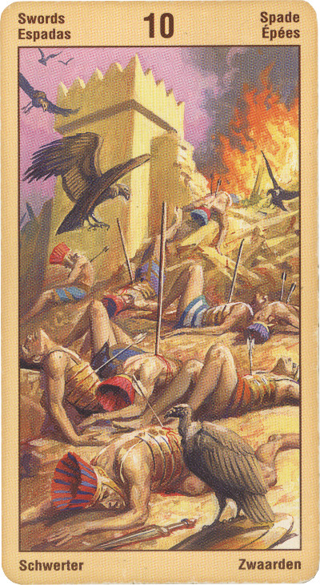

Десятка Мечей — Крушение
Значение: Эта карта символизирует отчаяние, ситуацию, когда все идет хуже некуда, а просветление, кажется, никогда не наступит. Однако смысл карты скорее оптимистичен: это ведь десятая, последняя карта ряда мечей, после нее начинается новая масть, новый период жизни.
Выпадая в раскладе, эта карта свидетельствует о том, что вас предали или оклеветали, или же что вы стали объектом незаслуженной ненависти или злоумышленных действий. Не исключено, что какая-то продолжительная ситуация подошла к концу, это может относиться к отношениям с близким человеком, к деловым соглашениям, к карьере, работе или к финансам.
Подобно карте Смерти, Десятка Мечей олицетворяет завершение, конец чего-то, размежевание. Это горький момент расставания с кем-то или с чем-то.
Эта карта заключает в себе дилемму: вот перед тобой препятствие; ты можешь попытаться его преодолеть, а можешь и не преодолевать. Вместе с тем, преодоление препятствий, символизируемых этой картой, открывает ворота на новый уровень и возносит (или возвращает) нас к тузу пентаклей.
Прежде чем выйдете «на солнечный свет», предстоит опуститься в самую темную пропасть в вашей жизни: только так вы сможете доказать себе и судьбе, которая вас ведет и направляет, что достойны лучшей участи, чем нынешняя!
Карта нечастий ,поражения. Проигранный суд, страдания, разрыв отношений. Горе, слезы, склонность к самоубийству.
В перевернутом положении – «еще не конец», кое-какие огорчения вам еще предстоят, но они будут уже последними, и после них все равно настанет светлый период.
Вы можете осознать, что окончательное сражение будет вестись не с каким-то внешним врагом, но с одним из аспектов вашего внутреннего состояния.
В перевернутом положении десятка мечей может дать отсутствие результатов. Вместе с тем это и невозможность дальнейшего продвижения. Причем препятствие может заключаться не только в преграде, но и в успехе.
Эттейлла- Ключевые слова: Слезы или жалобы, имеющие материальные причины. Или возвращение счастья.
Прямое значение: Плач.
Перевернутое значение: Прибыль.
Десятка Мечей — самая плохая карта в колоде, она даже хуже, чем Девятка. Карта связана со смер¬тью, крахом, катастрофой, крушением всех надежд и планов, с печалью. Все обращено против вас, никому нельзя доверять. В духовном плане «смерть» означает убитая вера, безверие. Если после этой кар¬ты идут туз и король любой масти, то это означает тюрьму
Возле Семерки Пентаклей она имеет благоприятное пред¬знаменование для денежных дел; она предвещает хорошую спекуляцию, прибыль для промышленных дел.
В перевернутом положении — минутное улучше¬ние, обманчивый луч надежды, временная прибыль, временный успех.